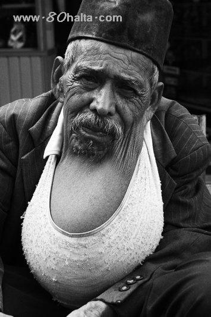

ئالدىنقى يازما
ئالدىنقى يازما كېيىنكى يازما
كېيىنكى يازما
قالقانسىمان بەز كېسەللىكى ھەققىدە [تېبابەت بىلىملىرى]
ئاپتور:Birzat ۋاقتى:2010-06-18



تۇرۇپ بىلەن ئالمىنى بىللە ئىستېمال قىلسا قالقانسىمان بەز كېسىلىنى پەيدا قىلىدۇ

تەتقىقاتتىن مەلۇم بولۇشىچە ، تۇرۇپ تىئوسىئانىك كىسلاتانى پەيدا قىلىدۇ . ئۇ ئادەم تېنىدە قالقانسىمان بەز كېسىلىگە قارشى ماددا تىئوسىئانىك كىسلاتاسىغا ئۆزگىرىدۇ ، لېكىن ئالما تەركىبىدە فلاۋۇن تۈرىدىكىلەر بىر قەدەر يۇقىرى ، ئۇلار ئىستېمال قىلىنغاندىن كېيىن دىھىدرو كىسبېنزوىك كىسلاتا ۋە فېرولىك كىسلاتاغا پارچىلىنىپ قالقانسىمان بەزنىڭ ئىقتىدارىنى زور دەرىجىدە كونتورل قىلىش رولىنى ئوينايدۇ . تۇرۇپ ئىستېمال قىلىپ ئارقىدىنلا ئالما ئىستېمال قىلسا ، قالقانسىمان بەز يوغىناپ كېتىدۇ ھەمدە قالقانسىمان بەز كېسىلىنى پەيدا قىلىدۇ .

رىزۋانەم نەمەت تەرجىمىسى
قالقانسىمان بەز كېسىلى ئاياللاردا كۆپرەك كۆرۈلىدۇ
شىنجاڭ تېببىي ئۇنۋېرسىتېتى قارمىقىدىكى 1 – دوختۇرخانا ئىچكى ئاجراتما بۆلۈمىنىڭ مۇدىرى مۇنداق دېدى : ‹‹قالقانسىمان بەز ئادەمنىڭ مېتابولىزمىنى تەڭشەپ ، ئۆسۈپ يېتىلىشنى ئىلگىرى سۈرىدۇ . قارىماققا كىچىكتەك كۆرۈنگەن قالقانسىمان بەز 20 نەچچە خىل كېسەللىك ئۆزگىرىشىنى پەيدا قىلىدۇ ، يەنى قالقانسىمان بەز ئىششىقى ، قالقانسىمان بەز راكى قاتارلىقلار . قالقانسىمان بەز راكىنىڭ كۆپ قىسمى ئاستا – ئاستا ئېغىرلىشىدۇ . ئۆسۈپ يېتىلىشى ئاستا ، ئوتتۇرىچە كېسەللىك مەزگىلى بەش يىلدىن ئالتە يىلغىچە بولىدۇ ، ئەڭ ئۇزاق بولغاندا 30 يىلغا يېتىدۇ ›› .
ئۇ يەنە مۇنداق دېدى : ‹‹بۆلۈمىمىز ھەر كۈنى 200 دىن 250 كىچە كېسەلنى كۆرىدۇ . ئۇنىڭ %70 تىن كۆپرەكى قالقانسىمان بەز كېسىلى بارلار ، كۆپىنچىسى ئاياللار . ئاپتونوم رايونىمىز يود كەمچىل رايون ، ھازىرقى جەمئىيەتنىڭ رىقابىتى ، خىزمەت بېسىمى قاتارلىقلارنىڭ بۇ خىل كېسەل بىلەن بەلگىلىك مۇناسىۋىتى بار . بۇ خىل كېسەل بولغۇچىدا دەسلەپتە تەرلەش ، قولى تىترەش ، ئۇخلىيالماسلىق ، ھودۇقۇش قاتارلىق ئالامەتلەر كۆرۈلىدۇ . شۇڭا ئۇنداق كىشلەر ۋاقتىدا داۋالىنىشى كېرەك . بۇ خىل كېسەللىك ئاياللاردا كۆپرەك كۆرۈلىدۇ . شۇڭا ئاياللار 35 ياشتىن ئاشقاندىن كېيىن ، بەش يىلدا بىر قېتىم قېنىدىكى قالقانسىمان بەز ھورمۇنىنى تەكشۈرتۈپ تۇرۇشى كېرەك ›› .
مەمتىمىن غۇپۇر تەرجىمىسى
ئاياللاردىكى ئېغىر دەرىجىدىكى ئۇزۇقلۇق يىتىشمەسلىك،زىيادە سېمىزلىك،قالقانسىمان بەز خىزمىتىى كۈچىيىپ كىتىش ياكى ئازىيىپ كىتىشمۇ تۇخۇمدان خىزمىتىگە تەسىر يەتكۈزۈپ تۇغماسلىقنى كەلتۈرۈپ چىقىرىدۇ.
چاچ شالاڭلىشىش-- قالقانسىمان بەز ئاجرالمىلىرىنىڭ زىيادە كۆپەيگەنلىكىنىڭ ياكى زىيادە ئازايغانلىقىنىڭ ئالامىتىدۇر. قالقانسىمان بەز ئاجرىتىپ چىقارغان گورمون بەدەندىكى زور مىقتاردىكى ماددا ئالماشتۇرۇش پائالىيىتىنى تەڭشەپ تۇرىدۇ. بۇ، چاچنىڭ ئۆسۈشىنىمۇ ئۆز ئىچىگە ئالىدۇ. ئەگەر قالقانسىمان بەز ئاقسىلنىڭ ئالمىشىشىنى قالايمىقانلاشتۇرىۋەتسە،چاچ چۈشۈپ ۋە شالاڭلىشىپ كېتىدۇ.
<<يود ۋە سالامەتلىك>> ھەققىدە
تەركىبىدە يود بولغان كالىي يودىد، ناترىي يودىد، يودات قاتارلىقلار بىرىكمىلەر بولۇپ، كىشىلەرنىڭ تەن ساغلاملىقىنى ئاسراشتا مۇھىم رول ئوينايدۇ. يود ئادەم بەدىنىگە زۆرۈر بولغان مىكرو ئېلېمېنت بولۇپ، قالقانسىمان بەز گورمونىنى تەشكىل قىلغۇچى مۇھىم تەركىب. نورمال ئادەم تېنىدە ئادەتتە 15 -20 مىللىگرامغىچە يود بولىدۇ. بۇنىڭ %70 - %80 كىچە بولغان قىسمى قالقانسىمان بەزگە يىغىلىدۇ. ئادەم بەدىنىدىكى يود بىرىكمە ھالەتتە مەۋجۇت بولۇپ، ئۇ فىزىئولوگىيىلىك تەسىر ئارقىلىق قالقانسىمان بەز گورمۇنىنى پەيدا قىلىدۇ. شۇڭلاشقا، قالقانسىمان بەز گورمونىنىڭ فىزىئولوگىيىلىك رولى ۋە مۇھىم فونىكسىيىسى يود بىلەن بىۋاستە مۇناسىۋەتلىك. ئادەم بەدىنىدىكى يود مىقدارى مۇھىت يەنى تۇپراق، سۇ ۋە يېمەكلىكلەرنىڭ تەركىبىدىكى يود مىقدارى بىلەن مۇناسىۋەتلىك. يود قوبۇل قىلىش مىقدارى زىيادە ئاز بولسا، بەدەندىكى يود مىقدارى ئازىيىپ كېتىدۇ. يېمەكلىك ۋە سۇدىكى يودنىڭ كۆپ قىسمى يودنىڭ ئانورگانىك بىرىكمىسى بولۇپ، ئاشقازان - ئۈچەي يوللىرىغا ناھايىتى ئاسان سۈمۈرۈلىدۇ. ئادەم بەدىنى ھەر كۈنى 0.1- 0.2 مىللىگرامغىچە يود قوبۇل قىلسا ئېھتىياج قاندۇرۇلىدۇ. نورمال ئەھۋالدا ئېھتىياجلىق بولغان مىكرو مىقداردىكى يود يېمەكلىك، سۇ، ھاۋا قاتارلىقلار ئارقىلىق قوبۇل قىلىنىدۇ. ئەمما بەزى رايونلاردا خىلمۇ - خىل سەۋەبلەر تۈپەيلىدىن سۇ ۋە يەر پوستىدا يود كەمچىل بولغاچقا يېمەكلىكلەر تەركىبىدىكى يود ئاز بولىدۇ. شۇڭلاشقا ئادەم بەدىنىگە قوبۇل قىلىنىدىغان يود يېتەرلىك بولمايدۇ - دە، بۇنىڭ بىلەن يەرلىك قالقانسىمان بەز ئىششىقى يەنى پوقاقنى كەلتۈرۈپ چىقىرىدۇ. بالىلاردا بولسا ئۆسۈپ - يېتىلىشى توختاپ قېلىش، ئەقلىي قابىلىيىتى تۆۋەن بولۇش ئەھۋاللىرى كۆرۈلىدۇ. بۇنىڭ ئۈچۈن تەركىبىدە يود بولغان ئاش تۇزى ۋە يۇقىرى يودلۇق تۇخۇم ئىستېمال قىلىش، قۇدۇق سۇلىرىغا يود قوشۇش، تەركىبىدە يود مول بولغان دېڭىز مەھسۇلاتلىرىنى ئىستېمال قىلىش لازىم.
دىققەت قىلىشقا ئەرزىيدىغىنى، ئادەم بەدىنىگە قوبۇل قىلىنغان يود زىيادە ئارتۇق بولسىمۇ زىيانلىق. شۇڭا نورمال يېمەكلىكلەردىن باشقا ئالاھىدە يود تولۇقلاشقا توغرا كېلىدىغان- كەلمەيدىغانلىقىنى دوختۇرغا تەكشۈرتۈپ مەسلىھەت سوراش، ھەرگىزمۇ قارىغۇلارچە يود تولۇقلىماسلىق لازىم.
قالقانسىمان بەز ئىقتىدارىغا تەسىر كۆرسىتىدىغان ئامىللار
تاماق يەپ بولۇپلا مېۋە - چېۋە ئىستېمال قىلىش مېۋە - چېۋە تەركىبىدىكى فلاۋون ئۈچەي يولىدىكى باكتېرىيىلەرنىڭ تەسىرىدە ھىدروكسى بېنزو كىسلاتاسىغا ئايلىنىدۇ. تاماق يەپ بولۇپلا مېۋە - چېۋە ئىستېمال قىلسا، ھىدروكسى بېنزو كىسلاتاسى بىلەن تاماق تەركىبىدىكى تىئوسىئانات ئۆزئارا تەسىرلىشىپ قالقانسىمان بەزنىڭ ئىقتىدارىغا زىيان يەتكۈزىدۇ. شۇڭا، ئەڭ ياخشىسى تاماق يەپ بىر سائەتتىن كېيىن مېۋە - چېۋە يېيىش كېرەك.
روھىي جەھەتتە چارچاش مۇۋاپىق دەم ئالماي ئۇزۇن مەزگىل ئەقلىي ئەمگەك بىلەن شۇغۇللىنىپ چارچىسا، قالقانسىمان بەزنىڭ ئىقتىدارىغا تەسىر يېتىدۇ. شۇڭا، ئەقلىي ئەمگەك بىلەن دەم ئېلىشنى مۇۋاپىق بىرلەشتۈرۈش كېرەك.
ئۇزۇن مەزگىل ئورۇقلىتىش دورىسى ئىستېمال قىلىش ئورۇقلىتىش دورىلىرى تەركىبىدە قالقانسىمان بەز ھورمۇنى بولۇپ، بۇ خىل دورىلار ماددا ئالماشتۇرۇش سۈرئىتىنى تېزلىتىپ، ئادەمنى ئورۇقلاتسىمۇ، لېكىن قالقانسىمان بەز ئىقتىدارىغا زىيان يەتكۈزۈپ، ئوپقان (قالقانسىمان بەز ئىقتىدارى ئېشىپ كېتىش كېسىلى)، ئىچكى ئاجرىتىپ چىقىرىش قالايمىقانلىشىش قاتارلىقلارنى كەلتۈرۈپ چىقىرىدۇ.
ئەگەر تۆۋەندىكى كېسەل ئالامەتلىرىنىڭ 5 تىن ئارتۇقى كۆرۈلسە، دوختۇرخانىغا بېرىپ قالقانسىمان بەز ئىقتىدارىنى تەكشۈرتۈش كېرەك:
1. مىجەزى چۇسلىشىش، كىچىككىنە ئىشلارغىمۇ ئاچچىقلىنىش. 2. نورمال تېمپېراتۇرىدىمۇ توختىماي تەرلەش. 3. نورمال تېمپېراتۇرىدا توڭلاش. 4. كىچىككىنە ئىشلار ئۈچۈن جىددىيلىشىپ، تىت - تىت بولۇش. 5. ئېغىرلىقى تۇيۇقسىز تۆۋەنلەش. 6. ئىشتىھاسى ئېچىلىپ، كۆپ غىزالىنىش. 7. دائىم ئىچى سۈرۈش. 8. ئۇيقۇسى ناچارلىشىش، تەپەككۇر ئىقتىدارى ئاجىزلاش. 9. كۆرۈش ئىقتىدارى تۆۋەنلەش.
ئىمىن توختى تەرجىمىسى
مەنبە:تور دۇنياسى
بۇ ھەقتە كەڭ تورداشلار بىلگەنلىرىنى ئايىماي <<داستۇرخان>> مىزغا تاشلىغاي! بىرلىكتە بەھر ئالغايمىز!!!

 يازما مەنبەسى: بېكەت ئەسىرى
يازما مەنبەسى: بېكەت ئەسىرى خەتكۈش: قالقانسىمان بەز ، تۇرۇپ، تۇرۇپ
خەتكۈش: قالقانسىمان بەز ، تۇرۇپ، تۇرۇپ  مۇناسىۋەتلىك يازمىلار:
مۇناسىۋەتلىك يازمىلار:
ئىنكاس: 0 | نەقىل: 0 | كۆرۈلگىنى: -
ئىنكاس يوللاش